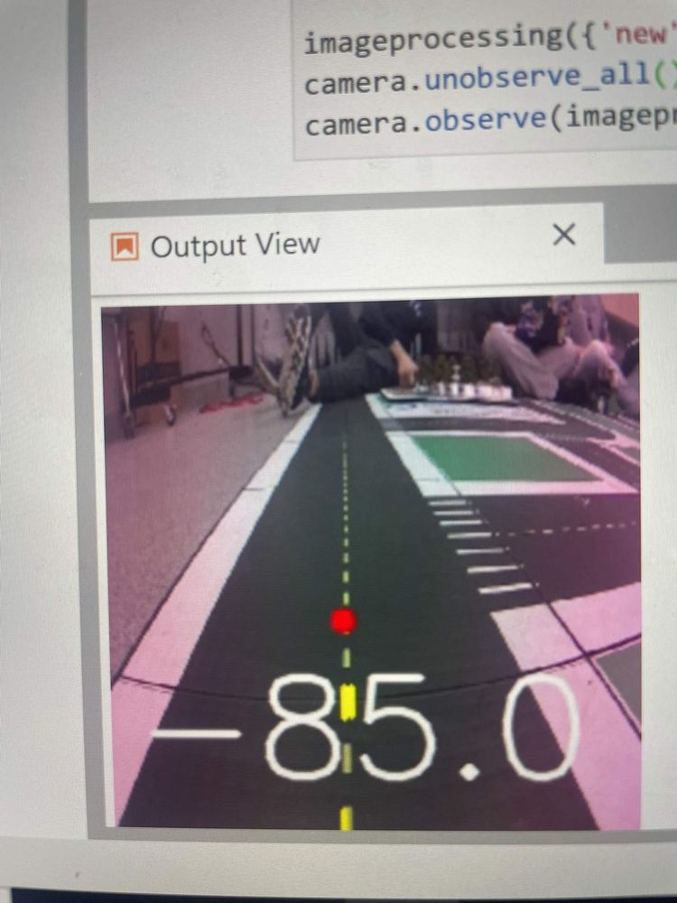
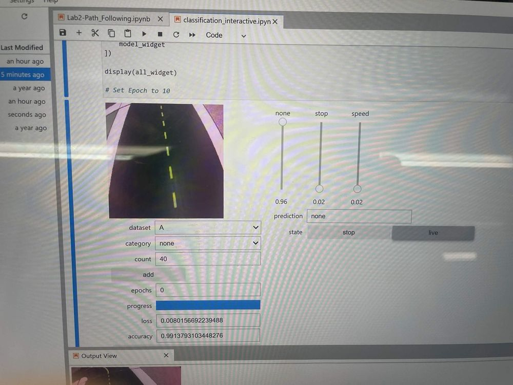
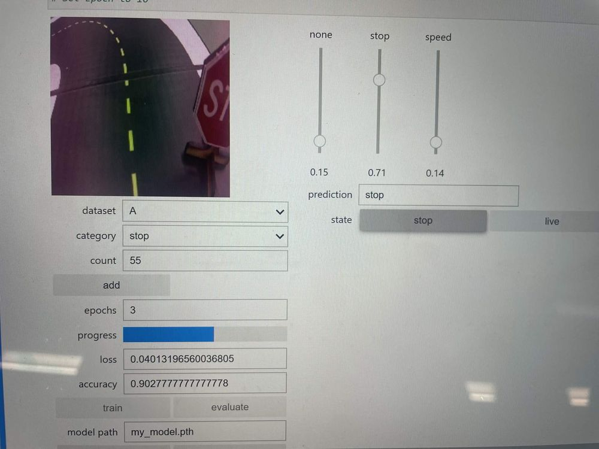

Perception & Autonomy
Autonomous Line-Following Robot
A prebuilt mobile robot programmed over SSH to drive a preset road course from its onboard RGB camera, following the lane line while detecting stop signs, speed-limit signs, turns, and intersections.

Approach
- Programmed the robot over SSH on its onboard Linux computer, working directly on the hardware rather than in simulation
- Tracked the yellow lane line from the onboard RGB camera and steered the robot to stay on the road course
- Implemented camera-based detection of stop signs, speed-limit signs, turns, and intersections, each triggering the matching driving behavior: stopping, changing speed, or turning

Results
